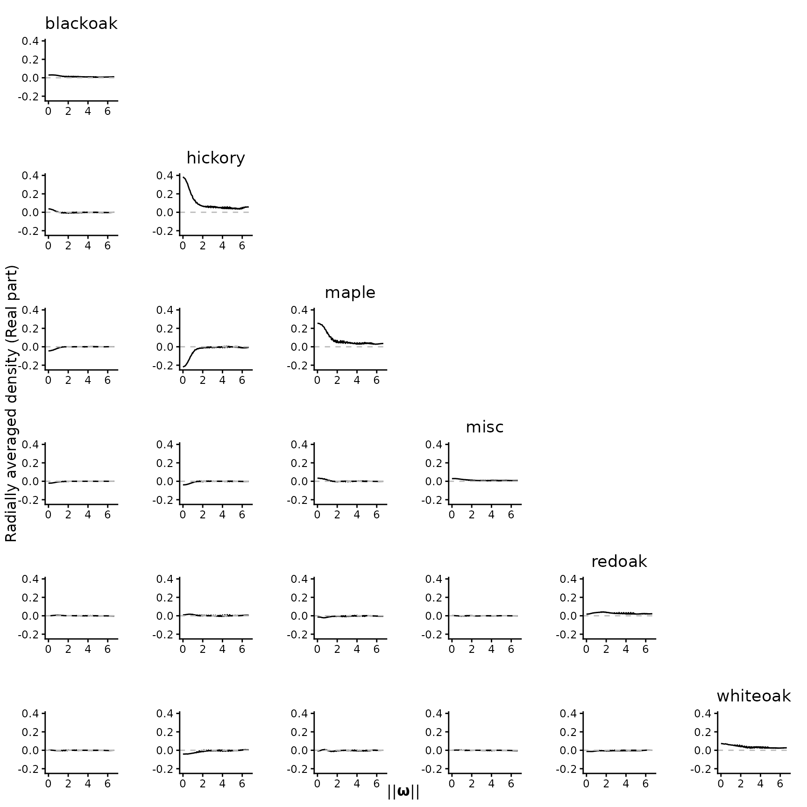
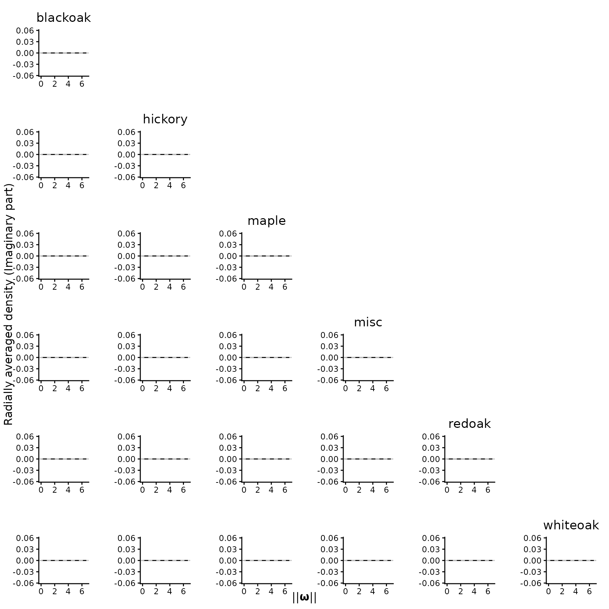
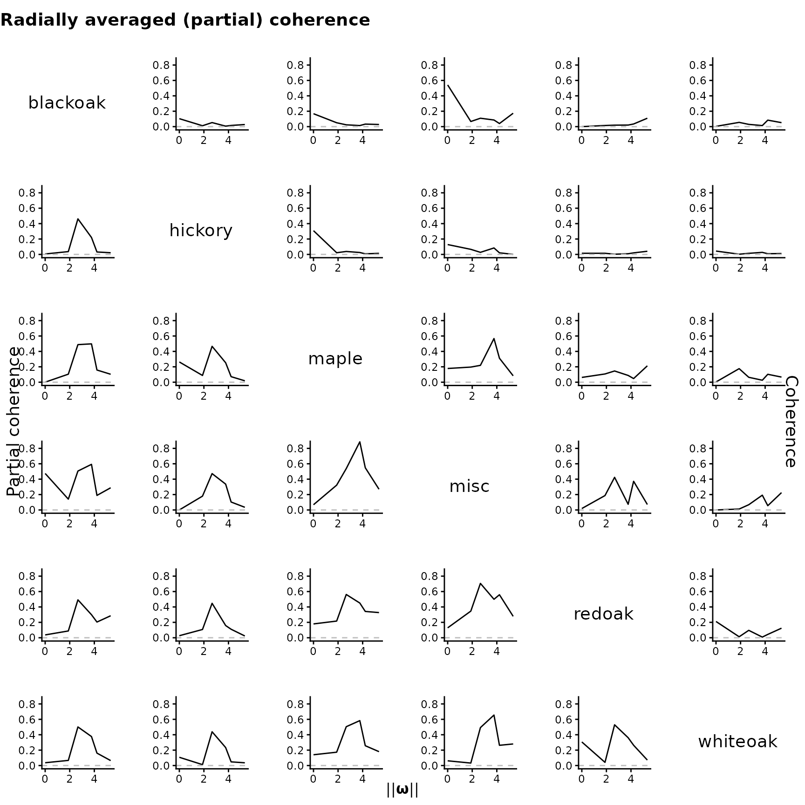

In this tutorial, we use the Lansing Woods dataset to demonstrate how to extract frequency domain features from a multivariate inhomogeneous point pattern data using SpecPP package. Here, we focus on the usage of this package. For the interpretation of the result, please refer to Ding et al. (2025, Section 3.2, Section 8, and Appendix F.3).
Import package and data
The Lansing Woods dataset, available in the spatstat
package, contains the spatial distributions of six different tree
species.
library(SpecPP)
library(spatstat)
plot(split(lansing), pch = 20, cex = .1, main = "Point pattern of Lansing Woods")
summary(lansing)
#> Marked planar point pattern: 2251 points
#> Average intensity 2251 points per square unit (one unit = 924 feet)
#>
#> *Pattern contains duplicated points*
#>
#> Coordinates are given to 3 decimal places
#> i.e. rounded to the nearest multiple of 0.001 units (one unit = 924 feet)
#>
#> Multitype:
#> frequency proportion intensity
#> blackoak 135 0.05997335 135
#> hickory 703 0.31230560 703
#> maple 514 0.22834300 514
#> misc 105 0.04664594 105
#> redoak 346 0.15370950 346
#> whiteoak 448 0.19902270 448
#>
#> Window: rectangle = [0, 1] x [0, 1] units
#> Window area = 1 square unit
#> Unit of length: 924 feetBefore proceeding with the analysis, we first examine the side lengths of the observational window. If the window is too small, the spectral estimator will be evaluated on a coarse frequency grid, limiting its ability to capture the frequency-domain characteristics of the point pattern. By contrast, an excessively large window can make computations unfeasible. We recommend side lengths between 20 and 40, as they offer a good balance between computational efficiency and resolution.
As shown in summary(lansing), the window is the unit
square (since spatstat
rescaled the original window). This is too small for spectral analysis,
so we rescale it by a factor of 1/20:
scale.factor = 1/20
spp = rescale(lansing, scale.factor)Now the rescaled dataset spp with side lengths 20 is
suitable for our analysis.
Window(spp)
#> window: rectangle = [0, 20] x [0, 20] units (one unit = 46.2 feet)Estimate pseudo-spectrum
To estimate the pseudo-spectrum of spp, we use the
kernel spectral density estimator (KSDE). This calculation of KSDE
involves two key steps: intensity function estimation and bandwidth
selection.
Intensity function estimation
The KSDE involves the first-order intensity function, which needs to
be estimated. While nonparametric approaches (e.g.,
spatstat::density.ppp()) are available, the asymptotic
properties of the KSDE are established under the parametric form of the
intensity. Therefore, for each tree species, we fit a log-linear model
for the intensity function using Cartesian coordinates:
spps = split(spp)
fit.lambda = vector("list", length(spps))
names(fit.lambda) = names(spps)
for (i in seq_along(spps)){
fit.lambda[[i]] = predict.ppm(ppm(spps[[i]] ~ x + y + x:y))
}We then plot the fitted intensity to verify whether it adequately
captures spatial inhomogeneity. The figure below suggests that our model
~ x + y + x:y may be overly simplistic. However, for
pedagogical purposes, we proceed with this specification.
In practice, additional spatial covariates can be incorporated to
improve the intensity model. These covariates should be specified in the
model formula and provided through the data argument in
spatstat.model::ppm(). For example, if you have two
covariates pH and gradient, they should be
combined into a list and passed to the data argument (check
?spatstat.model::ppm for details on the format of the
covariates):
# Just an example. This dataset from spatstat doesn't have any covariate.
covars = list(pH, gradient)
for (i in seq_along(spps)){
fit.lambda[[i]] = predict.ppm(ppm(spps[[i]] ~ x + y + x:y + pH + gradient,
data = covars))
}Bandwidth selection
Selecting a good bandwidth is crucial for reliable spectral
estimation. This is handled by the select_band() function,
which requires the following arguments:
-
ppp: The point pattern -
inten.formula: The model for the intensity (mentioned in previous section), in our example, is"~ x + y + x:y". Note that the formula here must be provided as a string. -
band.range: A numeric vector defining the search space for the optimal bandwidth.
If additional spatial covariates are specified in
inten.formula, the corresponding data must be provided via
the data.covariate argument. Other arguments of
select_band() can be left at their default values.
cv = select_band(ppp = spp,
inten.formula = "~ x + y + x:y",
band.range = seq(0.7, 1.1, .01))
plot(x = cv$Result[1,], y = cv$Result[2,], type = "l",
xlab = "Bandwidth", ylab = "Spectral divergence")
abline(v = cv$OptimalBandwidth, col = "blue", lwd = 2, lty = "dashed")As you see in above figure, the select_band() calculates
the spectral divergence across all candidate bandwidths in
band.range. The bandwidth minimizing the spectral
divergence is the optimal bandwidth we select, which is
cv$OptimalBandwidth = 0.83 (marked by the blue dashed
line).
Important considerations for bandwidth selection
Resolution of
band.range: The search space should be neither too fine nor too coarse to balance the computational efficiency with accuracy.Coverage of
band.range: A narrow search range may fail to capture the global minimum. When the minimum lies at the boundary of the specified range,select_band()issues a warning suggesting a broader search space. However, this safeguard is not foolproof—there are cases where no warning appears even if a local minimum is selected. For example, specifyingband.range = seq(0.96, 1.05, 0.01)in this example fails to identify the global minimum, because the local minimum lies inside the search range.
To mitigate these risks, we recommend running
select_band() multiple times with different
band.range, visualizing the results to ensure the chosen
bandwidth is robust and not constrained by an inadequate search
space.
Calculate the KSDE
Finally, we can calculate the KSDE with the fitted intensity and cross-validated bandwidth.
KSDE = periodogram_smooth(ppp = spp,
inten.formula = "~ x + y + x:y",
bandwidth = cv$OptimalBandwidth)The output of periodogram_smooth() is a list of 6
(marginal) + 15 (cross) = 21 KSDE matrices.
names(KSDE)
#> [1] "blackoak, blackoak" "blackoak, hickory" "blackoak, maple"
#> [4] "blackoak, misc" "blackoak, redoak" "blackoak, whiteoak"
#> [7] "hickory, hickory" "hickory, maple" "hickory, misc"
#> [10] "hickory, redoak" "hickory, whiteoak" "maple, maple"
#> [13] "maple, misc" "maple, redoak" "maple, whiteoak"
#> [16] "misc, misc" "misc, redoak" "misc, whiteoak"
#> [19] "redoak, redoak" "redoak, whiteoak" "whiteoak, whiteoak"Note that the KSDE for cross pseudo-spectrum is complex-valued. We
need to visualize the real and imaginary parts separately. By default,
plot_pairs() plot the real part of the radially averaged
spectral estimate:
plot_pairs(est.list = KSDE, ppp = spp)
To examine the imaginary part, we set type = "Im". As
below figure shows, the values are almost zero, particularly for
marginal cases where they should be exactly zero. Thus, the real part is
our primary focus of analysis.
plot_pairs(est.list = KSDE, ppp = spp, type = "Im")
Coherence analysis
Similar to spectral analysis in time series, we can calculate the
coherence and partial coherence based on the pseudo-spectrum for point
processes. The coherence() function computes these measures
for all non-overlaping frequencies and extracts their maxima. By default
(type = "partial"), it returns the maximal partial
coherence between any two point processes. In the code below, we
calculate the maximal coherence and partial coherence for all pairwise
point processes.
coh.partial = coherence(sp.est = KSDE, ppp = spp) # Maximal partial coherence
#> Number of frequencies to pick the maximum partial coherence: 25 (this value should not be too small).
coh = coherence(sp.est = KSDE, ppp = spp, type = "normal") # Maximal coherence
#> Number of frequencies to pick the maximum coherence: 25 (this value should not be too small).
round(coh.partial, 2)
#> blackoak hickory maple misc redoak whiteoak
#> blackoak 1.00 0.85 0.96 0.98 0.96 0.96
#> hickory 0.85 1.00 0.88 0.88 0.86 0.86
#> maple 0.96 0.88 1.00 0.99 0.96 0.98
#> misc 0.98 0.88 0.99 1.00 0.98 0.98
#> redoak 0.96 0.86 0.96 0.98 1.00 0.96
#> whiteoak 0.96 0.86 0.98 0.98 0.96 1.00
round(coh, 2)
#> blackoak hickory maple misc redoak whiteoak
#> blackoak 1.00 0.10 0.17 0.54 0.20 0.20
#> hickory 0.10 1.00 0.31 0.13 0.05 0.05
#> maple 0.17 0.31 1.00 0.64 0.38 0.33
#> misc 0.54 0.13 0.64 1.00 0.70 0.35
#> redoak 0.20 0.05 0.38 0.70 1.00 0.21
#> whiteoak 0.20 0.05 0.33 0.35 0.21 1.00Instead of summarizing by a single value, the
plot_coher() function allows us to visualize the coherence
and partial coherence values across all non-overlapping frequencies.
plot_coher(sp.est = KSDE,
coh.mat = coh,
partial.coh.mat = coh.partial,
ylim = c(0, 0.85))